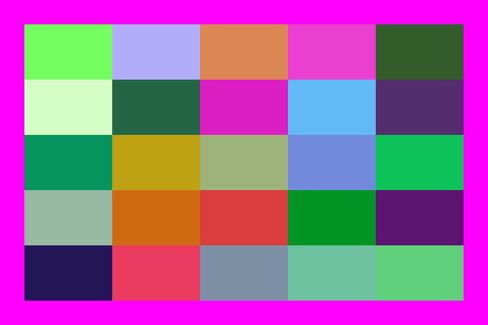
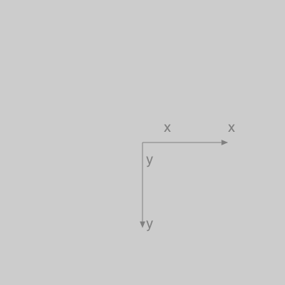
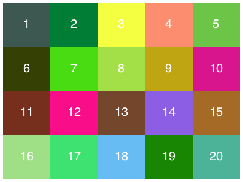
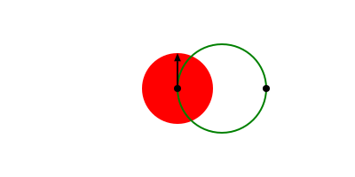
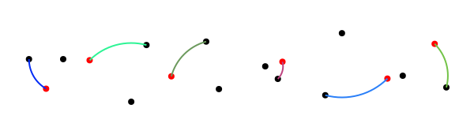
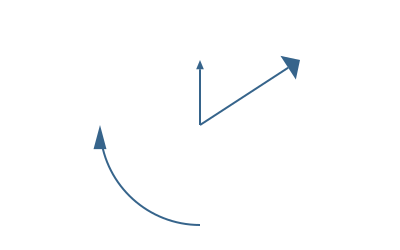

The basics
The underlying drawing model is that points are added to paths, then the paths can be filled and/or stroked, using the current graphics state, which specifies colors, line thicknesses and patterns, and opacity. You can modify the drawing space by transforming/rotating/scaling it before you add graphics.
Many of the drawing functions have an action argument. This can be :nothing, :fill, :stroke, :fillstroke, :fillpreserve, :strokepreserve, :clip. The default is :nothing.
Positions are usually specified either by x and y coordinates or a Point(x, y). Angles are usually measured starting at the positive x-axis going towards the positive y-axis (which usually points 'down' the page or canvas) in radians. Or 'clockwise'.
Types
The two main defined types are the Point and the Drawing. The Point type holds two coordinates, x and y:
Point(12.0, 13.0)It's immutable, so you want to avoid trying to change the x or y coordinate directly. You can use the letter O as a shortcut to refer to the current Origin, Point(0, 0).
The other is Drawing, which is how you create new drawings.
Drawings and files
To create a drawing, and optionally specify the filename and type, and dimensions, use the Drawing constructor function.
Luxor.Drawing — Type.Create a new drawing, and optionally specify file type (PNG, PDF, SVG, etc) and dimensions.
Drawing()creates a drawing, defaulting to PNG format, default filename "luxor-drawing.png", default size 800 pixels square.
You can specify dimensions, and use the default target filename:
Drawing(400, 300)creates a drawing 400 pixels wide by 300 pixels high, defaulting to PNG format, default filename "/tmp/luxor-drawing.png".
Drawing(400, 300, "my-drawing.pdf")creates a PDF drawing in the file "my-drawing.pdf", 400 by 300 pixels.
Drawing(1200, 800, "my-drawing.svg")`creates an SVG drawing in the file "my-drawing.svg", 1200 by 800 pixels.
Drawing(1200, 1200/golden, "my-drawing.eps")creates an EPS drawing in the file "my-drawing.eps", 1200 wide by 741.8 pixels (= 1200 ÷ ϕ) high.
Drawing("A4", "my-drawing.pdf")creates a drawing in ISO A4 size (595 wide by 842 high) in the file "my-drawing.pdf". Other sizes available are: "A0", "A1", "A2", "A3", "A4", "A5", "A6", "Letter", "Legal", "A", "B", "C", "D", "E". Append "landscape" to get the landscape version.
Drawing("A4landscape")creates the drawing A4 landscape size.
PDF files default to a white background, but PNG defaults to transparent, unless you specify one using background().
To finish a drawing and close the file, use finish(), and, to launch an external application to view it, use preview().
Luxor.finish — Function.finish()Finish the drawing, and close the file. You may be able to open it in an external viewer application with preview().
Luxor.preview — Function.preview()On macOS, open the file, which probably uses the default, Preview.app. On Unix, open the file with xdg-open. On Windows, pass the filename to the shell.
The global variable currentdrawing (of type Drawing) holds a few parameters which are occasionally useful:
julia> fieldnames(currentdrawing)
10-element Array{Symbol,1}:
:width
:height
:filename
:surface
:cr
:surfacetype
:redvalue
:greenvalue
:bluevalue
:alphaThe drawing area
The origin (0/0) starts off at the top left: the x axis runs left to right, and the y axis runs top to bottom.
The origin() function moves the 0/0 point to the center of the drawing. It's often convenient to do this at the beginning of a program. You can use functions like scale(), rotate(), and translate() to change the coordinate system.
background() fills the image with a color, covering any previous contents. By default, PDF files have a white background, whereas PNG drawings have no background, so the background appears transparent in other applications. If there is a current clipping region, background() fills just that region. Here, the first background() filled the entire drawing; the calls in the loop fill only the active clipping region:
background("magenta")
tiles = Tiler(600, 400, 5, 5, margin=30)
for (pos, n) in tiles
box(pos, tiles.tilewidth, tiles.tileheight, :clip)
background(randomhue()...)
clipreset()
end
The axes() function draws a couple of lines and text labels in light gray to indicate the position and orientation of the current axes.
background("gray80")
origin()
axes()
Luxor.background — Function.background(color)Fill the canvas with a single color. Returns the (red, green, blue, alpha) values.
Examples:
background("antiquewhite")
background("ivory")
background(RGB(0, 0, 0)) # if Colors.jl is installed
background(Luv(20, -20, 30))If you don't specify a background color for a PNG drawing, the background will be transparent. You can set a partly or completely transparent background for PNG files by passing a color with an alpha value, such as this 'transparent black':
background(RGBA(0, 0, 0, 0))Luxor.axes — Function.Draw two axes lines starting at O, the current 0/0, and continuing out along the current positive x and y axes.
Luxor.origin — Function.origin()Reset the current matrix, and then set the 0/0 origin to the center of the drawing (otherwise it will stay at the top left corner, the default).
You can refer to the 0/0 point as O. (O = Point(0, 0)),
Tiles
The drawing area (or any other area) can be divided into rectangular tiles (as rows and columns) using the Tiler iterator, which returns the center point and tile number of each tile.
In this example, every third tile is divided up into subtiles and colored:
tiles = Tiler(400, 300, 4, 5, margin=5)
for (pos, n) in tiles
randomhue()
box(pos, tiles.tilewidth, tiles.tileheight, :fill)
if n % 3 == 0
gsave()
translate(pos)
subtiles = Tiler(tiles.tilewidth, tiles.tileheight, 4, 4, margin=5)
for (pos1, n1) in subtiles
randomhue()
box(pos1, subtiles.tilewidth, subtiles.tileheight, :fill)
end
grestore()
end
sethue("white")
textcentred(string(n), pos + Point(0, 5))
end
Luxor.Tiler — Type.tiles = Tiler(areawidth, areaheight, nrows, ncols, margin=20)A Tiler is an iterator that, for each iteration, returns a tuple of:
the
x/ypoint of the center of each tile in a set of tiles that divide up a rectangular space such as a page into rows and columns (relative to current 0/0)the number of the tile
areawidth and areaheight are the dimensions of the area to be tiled, nrows/ncols are the number of rows and columns required, and margin is applied to all four edges of the area before the function calculates the tile sizes required.
tiles = Tiler(1000, 800, 4, 5, margin=20)
for (pos, n) in tiles
# the point pos is the center of the tile
endYou can access the calculated tile width and height like this:
tiles = Tiler(1000, 800, 4, 5, margin=20)
for (pos, n) in tiles
ellipse(pos.x, pos.y, tiles.tilewidth, tiles.tileheight, :fill)
endSave and restore
gsave() saves a copy of the current graphics settings (current axis rotation, position, scale, line and text settings, color, and so on). When the next grestore() is called, all changes you've made to the graphics settings will be discarded, and they'll return to how they were when you last used gsave(). gsave() and grestore() should always be balanced in pairs.
Luxor.gsave — Function.Save the current graphics state on the stack.
Luxor.grestore — Function.Replace the current graphics state with the one on top of the stack.
Simple shapes
Functions for making shapes include circle(), ellipse(), squircle(), arc(), carc(), curve(), sector(), rect(), pie(), and box(). There's also ngon() and star(), listed under Polygons, below.
Rectangles and boxes

Luxor.rect — Function.Create a rectangle with one corner at (xmin/ymin) with width w and height h and do an action.
rect(xmin, ymin, w, h, action)See box() for more ways to do similar things, such as supplying two opposite corners, placing by centerpoint and dimensions.
Create a rectangle with one corner at cornerpoint with width w and height h and do an action.
rect(cornerpoint, w, h, action)Luxor.box — Function.Create a rectangle between two points and do an action.
box(cornerpoint1, cornerpoint2, action=:nothing)Create a box/rectangle using the first two points of an array of Points to defined opposite corners.
box(points::Array, action=:nothing)Create a box/rectangle centered at point pt with width and height. Use vertices=true to return an array of the four corner points rather than draw the box.
box(pt::Point, width, height, action=:nothing; vertices=false)Create a box/rectangle centered at point x/y with width and height.
box(x, y, width, height, action=:nothing)Luxor.polybbox — Function.Find the bounding box of a polygon (array of points).
polybbox(pointlist::Array)Return the two opposite corners (suitable for box(), for example).
Circles, ellipses, and the like
There are various ways to make circles, including by center and radius, through two points, or passing through three points.
p1 = O
p2 = Point(100, 0)
sethue("red")
circle(p1, 40, :fill)
sethue("green")
circle(p1, p2, :stroke)
sethue("black")
arrow(O, Point(0, -40))
map(p -> circle(p, 4, :fill), [p1, p2])
sethue("black")
p1 = Point(0, -50)
p2 = Point(100, 0)
p3 = Point(0, 65)
map(p -> circle(p, 4, :fill), [p1, p2, p3])
circle(center3pts(p1, p2, p3)..., :stroke)
With ellipse() you can place ellipses (and circles) by defining the center point and the width and height.
tiles = Tiler(500, 300, 5, 5)
width = 20
height = 25
for (pos, n) in tiles
randomhue()
ellipse(pos, width, height, :fill)
sethue("black")
label = string(round(width/height, 2))
textcentered(label, pos.x, pos.y + 25)
width += 2
end
Luxor.circle — Function.Make a circle of radius r centred at x/y.
circle(x, y, r, action=:nothing)action is one of the actions applied by do_action, defaulting to :nothing. You can also use ellipse() to draw circles and place them by their centerpoint.
Make a circle centred at pt.
circle(pt, r, action)Make a circle that passes through two points that define the diameter:
circle(pt1::Point, pt2::Point, action=:nothing)Luxor.ellipse — Function.Make an ellipse, centered at xc/yc, fitting in a box of width w and height h.
ellipse(xc, yc, w, h, action=:none)Make an ellipse, centered at point c, with width w, and height h.
ellipse(cpt, w, h, action=:none)A sector (strictly an "annular sector") has an inner and outer radius, as well as start and end angles.
sector(50, 90, pi/2, 0, :fill)
Luxor.sector — Function.sector(innerradius, outerradius, startangle, endangle, action=:none)Make an annular sector centered at the current 0/0 point.
A pie (or wedge) has start and end angles.
pie(0, 0, 100, pi/2, pi, :fill)
Luxor.pie — Function.pie(x, y, radius, startangle, endangle, action=:none)Make a pie shape centered at x/y. Angles start at the positive x-axis and are measured clockwise.
pie(centerpoint, radius, startangle, endangle, action=:none)Make a pie shape centered at centerpoint.
Angles start at the positive x-axis and are measured clockwise.
A squircle is a cross between a square and a circle. You can adjust the squariness and circularity of it to taste:
setline(2)
tiles = Tiler(600, 250, 1, 3)
for (pos, n) in tiles
sethue("lavender")
squircle(pos, 80, 80, rt=[0.3, 0.5, 0.7][n], :fillpreserve)
sethue("grey20")
stroke()
textcentered("rt = $([0.3, 0.5, 0.7][n])", pos)
end
Luxor.squircle — Function.Make a squircle (basically a rectangle with rounded corners). Specify the center position, horizontal radius (distance from center to a side), and vertical radius (distance from center to top or bottom):
squircle(center::Point, hradius, vradius, action=:none; rt = 0.5, vertices=false)The rt option defaults to 0.5, and gives an intermediate shape. Values less than 0.5 make the shape more square. Values above make the shape more round.
For a simple rounded rectangle, smooth the corners of a box, like so:
setline(4)
polysmooth(box(O, 200, 150, vertices=true), 10, :stroke)
circlepath() constructs a circular path from Bèzier curves, which allows you to use circles as paths.
setline(4)
tiles = Tiler(600, 250, 1, 5)
for (pos, n) in tiles
randomhue()
circlepath(pos, tiles.tilewidth/2, :path)
newsubpath()
circlepath(pos, rand(5:tiles.tilewidth/2 - 1), :fill, reversepath=true)
end
Luxor.circlepath — Function. circlepath(center::Point, radius, action=:none;
reversepath=false,
kappa = 0.5522847)Draw a circle using Bézier curves.
Lines, arcs, and curves
There is a 'current position' which you can set with move(), and can use implicitly in functions like line(), text(), and curve().
curve() constructs Bèzier curves from control points:
setline(.5)
pt1 = Point(0, -125)
pt2 = Point(200, 125)
pt3 = Point(200, -125)
sethue("red")
foreach(p -> circle(p, 4, :fill), [O, pt1, pt2, pt3])
line(O, pt1, :stroke)
line(pt2, pt3, :stroke)
sethue("black")
setline(3)
move(O)
curve(pt1, pt2, pt3)
stroke()There are a few arc-drawing commands, such as arc(), carc(), and arc2r(). arc2r() draws a circular arc that joins two points:
tiles = Tiler(700, 200, 1, 6)
for (pos, n) in tiles
c1, pt2, pt3 = ngon(pos, rand(10:50), 3, rand(0:pi/12:2pi), vertices=true)
sethue("black")
map(pt -> circle(pt, 4, :fill), [c1, pt3])
sethue("red")
circle(pt2, 4, :fill)
randomhue()
arc2r(c1, pt2, pt3, :stroke)
end
Luxor.move — Function.Move to a point.
move(x, y)
move(pt)Luxor.rmove — Function.Move by an amount from the current point. Move relative to current position by x and y:
rmove(x, y)Move relative to current position by the pt's x and y:
rmove(pt)Luxor.line — Function.Create a line from the current position to the x/y position and optionally apply an action:
line(x, y)
line(x, y, :action)
line(pt)Make a line between two points, pt1 and pt2.
line(pt1::Point, pt2::Point, action=:nothing)Luxor.rline — Function.Create a line relative to the current position to the x/y position and optionally apply an action:
rline(x, y)
rline(x, y, :action)
rline(pt)Luxor.arc — Function.Add an arc to the current path from angle1 to angle2 going clockwise.
arc(xc, yc, radius, angle1, angle2, action=:nothing)Angles are defined relative to the x-axis, positive clockwise.
Arc with centerpoint.
arc(centerpoint::Point, radius, angle1, angle2, action=:nothing)Luxor.arc2r — Function. arc2r(c1, p2, p3, action=:nothing)Make a circular arc centered at c1 that starts at p2 and ends at p3, going clockwise.
c1-p2 really determines the radius. If p3 doesn't lie on the circular path, it will be used only as an indication of the arc's length, rather than its position.
Luxor.carc — Function.Add an arc to the current path from angle1 to angle2 going counterclockwise.
carc(xc, yc, radius, angle1, angle2, action=:nothing)Angles are defined relative to the x-axis, positive clockwise.
Luxor.curve — Function.Draw a Bézier curve.
curve(x1, y1, x2, y2, x3, y3)
curve(p1, p2, p3)The spline starts at the current position, finishing at x3/y3 (p3), following two control points x1/y1 (p1) and x2/y2 (p2)
Geometry tools
You can find the midpoint between two points using midpoint(). intersection() finds the intersection of two lines.
center3pts() finds the radius and center point of a circle passing through three points which you can then use with functions such as circle() or arc2r().
Luxor.midpoint — Function.midpoint(p1, p2)Find the midpoint between two points.
midpoint(a)Find midpoint between the first two elements of an array of points.
Luxor.intersection — Function.intersection(p1::Point, p2::Point, p3::Point, p4::Point)Find intersection of two lines p1-p2 and p3-p4
This returns a tuple: (boolean, point(0, 0)).
Keyword options and default values:
crossingonly = falseIf crossingonly = true, returns (false, intersectionpoint) if the lines don't cross, but would intersect at intersectionpoint if continued beyond their current endpoints.
commonendpoints = falseIf commonendpoints= true, will return (false, Point(0, 0)) if the lines share a common end point (because that's not so much an intersection, more a meeting).
Function returns (false, Point(0, 0)) if the lines are undefined,
Luxor.center3pts — Function.Find the radius and center point for three points lying on a circle.
center3pts(a::Point, b::Point, c::Point)returns (centerpoint, radius) of a circle. Then you can use circle() to place a circle, or arc() to draw an arc passing through those points.
If there's no such circle, then you'll see an error message in the console and the function returns (Point(0,0), 0).
Arrows
You can draw lines or arcs with arrows at the end with arrow(). For straight arrows, supply the start and end points. For arrows as circular arcs, you provide center, radius, and start and finish angles. You can optionally provide dimensions for the arrowheadlength and arrowheadangle of the tip of the arrow (angle in radians between side and center). The default line weight is 1.0, equivalent to setline(1)), but you can specify another.
arrow(O, Point(0, -65))
arrow(O, Point(100, -65), arrowheadlength=20, arrowheadangle=pi/4, linewidth=.3)
arrow(O, 100, pi, pi/2, arrowheadlength=25, arrowheadangle=pi/12, linewidth=1.25)
Luxor.arrow — Function.Draw a line between two points and add an arrowhead at the end. The arrowhead length will be the length of the side of the arrow's head, and the arrowhead angle is the angle between the sloping side of the arrowhead and the arrow's shaft.
arrow(startpoint::Point, endpoint::Point; linewidth=1.0, arrowheadlength=10, arrowheadangle=pi/8)Arrows don't use the current linewidth setting (setline()), and defaults to 1; you can specify another linewidth.
It doesn't need stroking/filling, the shaft is stroke()d and the head fill()ed with the current color.
Draw a curved arrow, an arc centered at centerpos starting at startangle and ending at endangle with an arrowhead at the end. Angles are measured clockwise from the positive x-axis.
Arrows don't use the current linewidth setting (setline()); you can specify the linewidth.
arrow(centerpos::Point, radius, startangle, endangle; linewidth=1.0, arrowheadlength=10, arrowheadangle=pi/8)Paths
A path is a group of points. A path can have subpaths (which can form holes).
The getpath() function gets the current Cairo path as an array of element types and points. getpathflat() gets the current path as an array of type/points with curves flattened to line segments.
textpath("N")
pathdata = getpathflat()
outline = Point[]
for i in pathdata[1:end-1]
if length(i.points) == 2
x = i.points[1]
y = i.points[2]
push!(outline, Point(x, y))
end
end
poly(outline, :stroke, close=true)
for i in 5:5:35
poly(offsetpoly(outline, i), :stroke, close=true)
endLuxor.newpath — Function.newpath()Create a new path. This is Cairo's new_path() function.
Luxor.newsubpath — Function.newsubpath()Add a new subpath to the current path. This is Cairo's new_sub_path() function. It can be used for example to make holes in shapes.
Luxor.closepath — Function.closepath()Close the current path. This is Cairo's close_path() function.
Luxor.getpath — Function.Get the current path (thanks Andreas Lobinger!)
Returns a CairoPath which is an array of .element_type and .points. With the results you could typically step through and examine each entry:
o = getpath()
for e in o
if e.element_type == Cairo.CAIRO_PATH_MOVE_TO
(x, y) = e.points
move(x, y)
elseif e.element_type == Cairo.CAIRO_PATH_LINE_TO
(x, y) = e.points
# straight lines
line(x, y)
stroke()
circle(x, y, 1, :stroke)
elseif e.element_type == Cairo.CAIRO_PATH_CURVE_TO
(x1, y1, x2, y2, x3, y3) = e.points
# Bezier control lines
circle(x1, y1, 1, :stroke)
circle(x2, y2, 1, :stroke)
circle(x3, y3, 1, :stroke)
move(x, y)
curve(x1, y1, x2, y2, x3, y3)
stroke()
(x, y) = (x3, y3) # update current point
elseif e.element_type == Cairo.CAIRO_PATH_CLOSE_PATH
closepath()
else
error("unknown CairoPathEntry " * repr(e.element_type))
error("unknown CairoPathEntry " * repr(e.points))
end
endLuxor.getpathflat — Function.Get the current path, like getpath() but flattened so that there are no Bezier curves.
Returns a CairoPath which is an array of .element_type and .points.